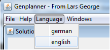

Funktionalität :: Spracheinstellungen
Die Sprache für die Benutzeroberfläche kann über das Menu am oberen Rand der Anwendung umgestellt werden. Deutsch und Englisch stehen zur Auswahl.

Menuauswahl zum Umstellen der Sprache